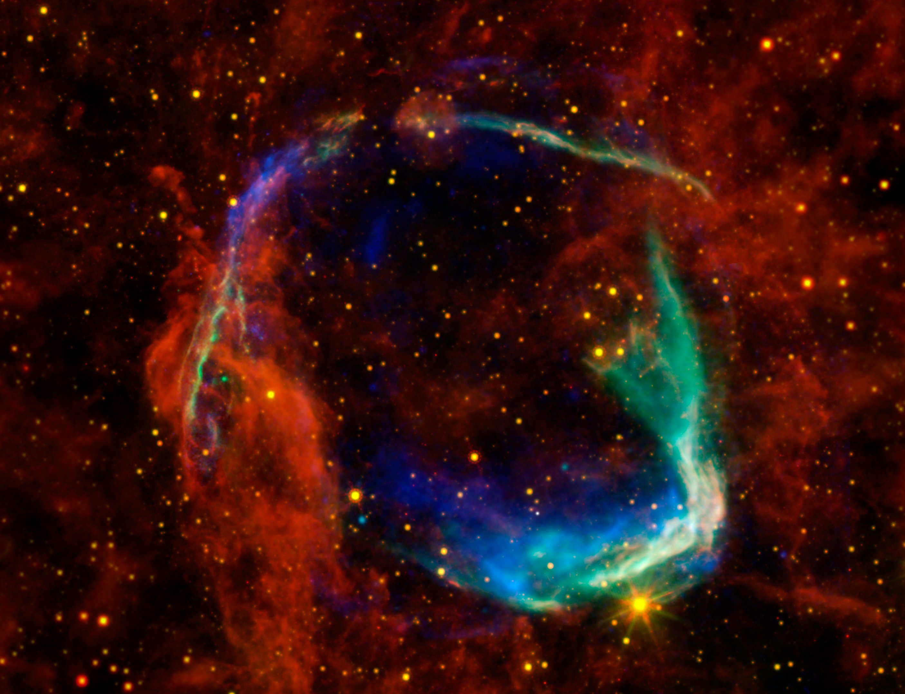
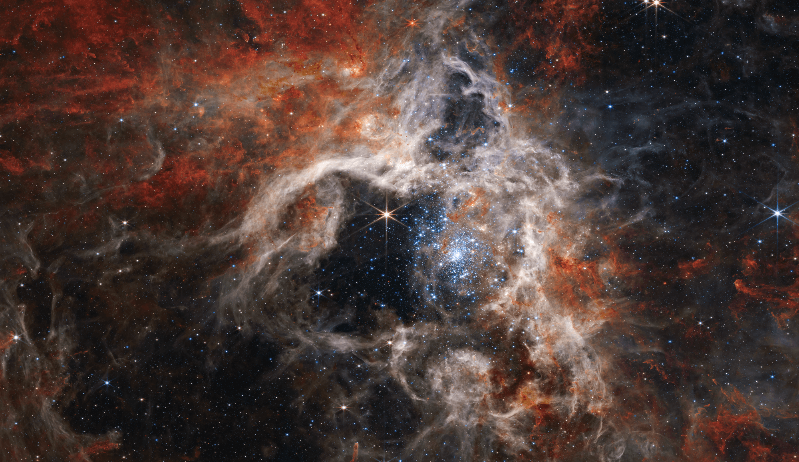
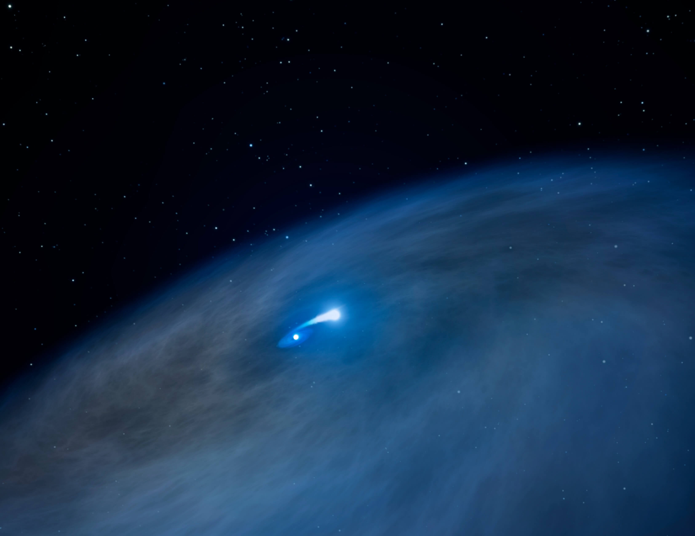
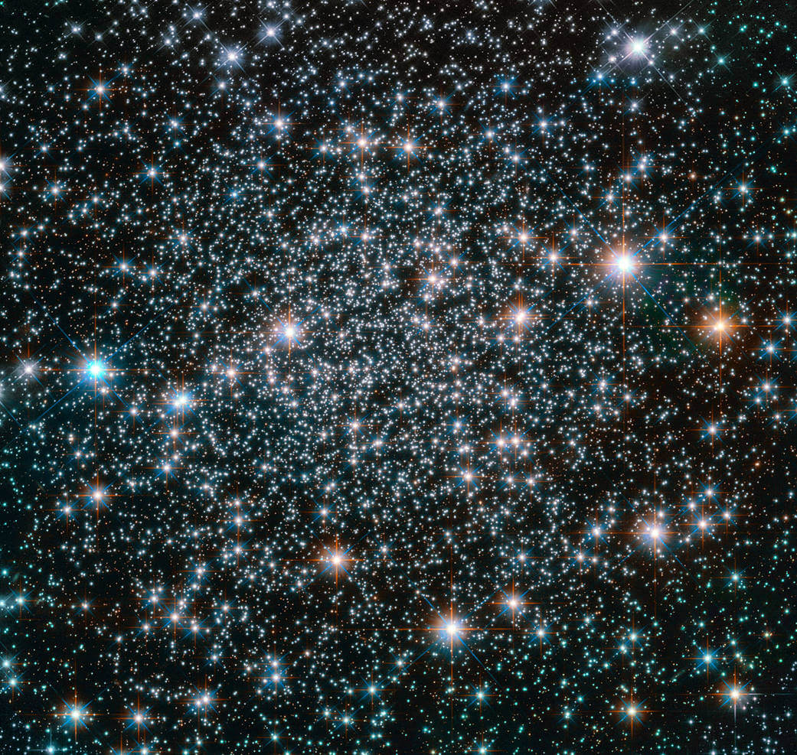

Space Images
Explore stunning images of space, including planets, stars, and galaxies.

Image Credit: X-ray: NASA/CXC/SAO & ESA; Infrared: NASA/JPL-Caltech/B. Williams (NCSU)

Image Credit NASA, ESA, CSA, STScI, Webb ERO Production Team

Image Credit NASA/Hubble

Image Credit ESA/Hubble & NASA